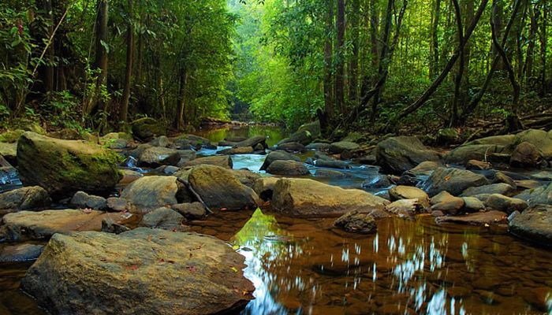

I like to travel around the Sri Lanka as a hobbie. The one place i like go the sinharaja rainforet. Sinharaja Reinforest Located in south-west Sri Lanka, Sinharaja is the country's last viable area of primary tropical rainforest. More than 60% of the trees are endemic and many of them are considered rare. There is much endemic wildlife, especially birds, but the reserve is also home to over 50% of Sri Lanka's endemic species of mammals and butterflies, as well as many kinds of insects, reptiles and rare amphibians.